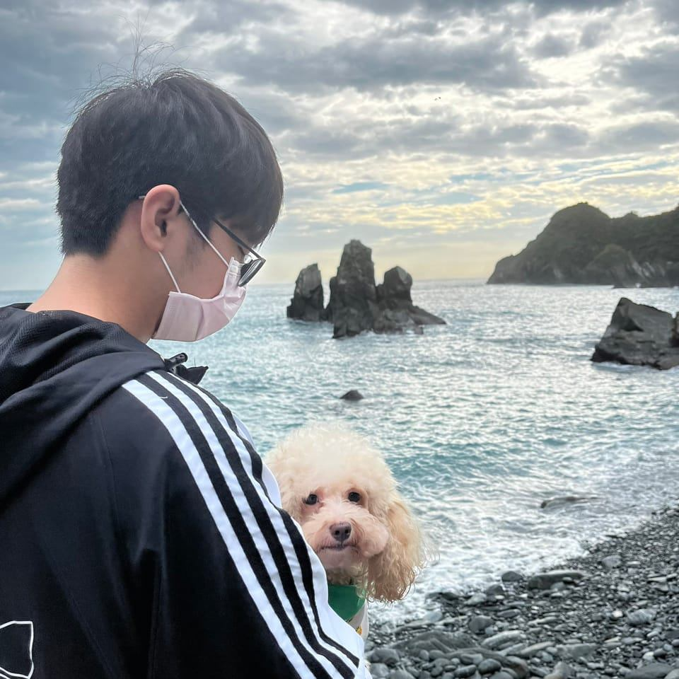

><head>
    <meta charset="UTF-8">
    <meta http-equiv="X-UA-Compatible" content="IE=edge">
    <meta name="viewport" content="width=device-width, initial-scale=1.0">
    <title>余宏煒的個人履歷</title>
    <link rel="shortcut icon" href="me/picture2.jpg" type="image/x-icon">
    <style>
        #container{
            background-color:rgb(219, 115, 245);
            margin:0px auto;
            width:800px;
        }
    </style>
</head>
<body>
    <h1>
        余宏煒 Hong-Wei,Yu
        
    </h1>
    <h2>
        _________________________________________________________

        太無情了，哭啊
        _________________________________________________________
    </h2>
    <h2>
        學歷
    </h2>
    <h3>
        <a href="https://web.shps.ntpc.edu.tw/" target="_blank" rel="noopener noreferrer">三峽國小</a>
        <a href="https://www.shjhs.ntpc.edu.tw/" target="_blank" rel="noopener noreferrer">三峽國中</a>
        <a href="https://www.ykvs.ntpc.edu.tw/" target="_blank" rel="noopener noreferrer">鶯歌高職</a>
        <a href="https://www.aeust.edu.tw" target="_blank" rel="noopener noreferrer">亞東科大</a>
    </h3>
</body>